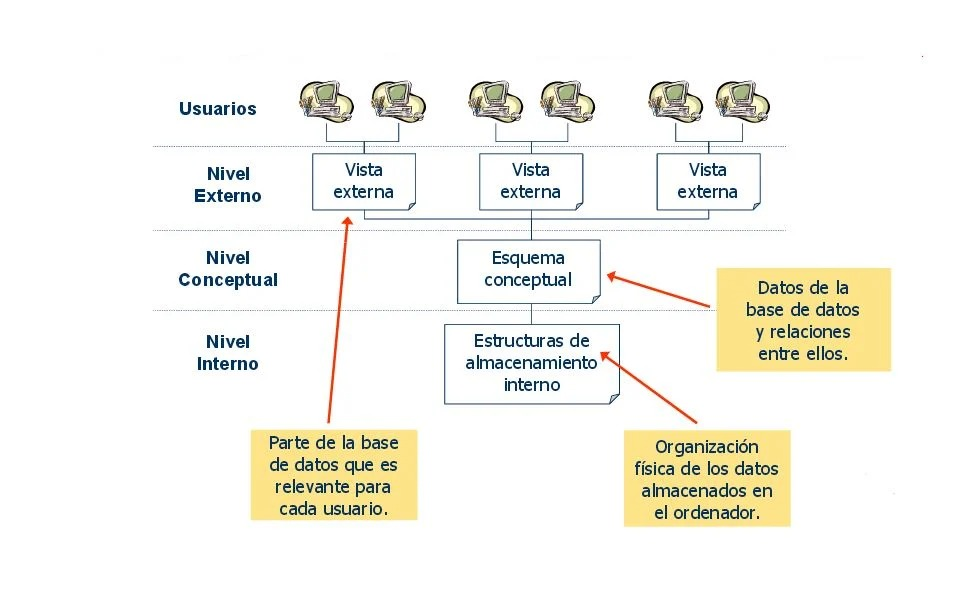
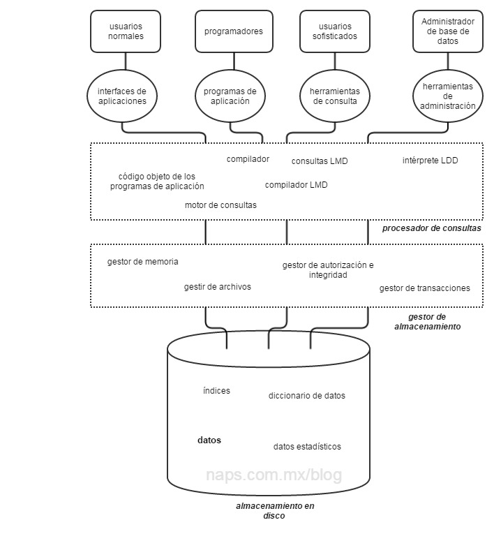

Introducción
Las bases de datos constituyen una pieza fundamental en la gestión y manipulación de información en casi todas las áreas tecnológicas y científicas. Gracias a ellas, grandes volúmenes de datos pueden ser organizados, almacenados y consultados rápidamente, facilitando la toma de decisiones y el desarrollo de aplicaciones diversas. En este artículo exploraremos los conceptos básicos, las arquitecturas implicadas y el papel crucial que desempeña el Sistema de Gestión de Bases de Datos (SGBD).

Conceptos Básicos
Una base de datos es una colección organizada de datos relacionados que se almacenan electrónicamente para facilitar su acceso, manipulación y actualización eficiente. El modelo de base de datos relacional es el más común, donde la información se organiza en tablas.
Tablas
Las tablas son el componente fundamental de las bases de datos relacionales. Una tabla es una estructura que organiza los datos en filas y columnas. Cada fila representa un registro único y cada columna representa un atributo o campo específico del dato.
Atributos
Los atributos corresponden a las columnas en una tabla y describen las características específicas de cada dato almacenado. Por ejemplo, en una tabla llamada "Estudiantes", los atributos pueden ser "ID", "Nombre", "Edad" y "Carrera".
Registros (Filas)
Cada registro o fila en una tabla representa una entidad única con valores para cada uno de los atributos. Por ejemplo, un estudiante particular con su ID, nombre, edad y carrera específica.
Relaciones
Las relaciones son conexiones entre tablas basadas en valores comunes, generalmente definidas mediante claves primarias y claves foráneas. Estas relaciones permiten combinar datos de diferentes tablas, manteniendo la integridad y eliminando redundancias.
Objetivos de las Bases de Datos
- Almacenamiento eficiente: Mantener grandes volúmenes de datos sin redundancias innecesarias.
- Integridad: Garantizar que los datos sean correctos y consistentes en todo momento.
- Seguridad: Proteger la información contra accesos no autorizados.
- Facilidad de acceso y consulta: Permitir consultas complejas y rápidas a través de lenguajes especializados como SQL.
- Manejo de concurrencia: Permitir que múltiples usuarios accedan y modifiquen los datos al mismo tiempo sin conflictos.
Usos Comunes de las Bases de Datos
- Aplicaciones empresariales para manejo de inventario, ventas, recursos humanos.
- Sistemas bancarios para registro de transacciones y cuentas.
- Almacenamiento de información en aplicaciones web y móviles.
- Sistemas educativos para manejar información de estudiantes y cursos.
- Big Data e inteligencia artificial, para análisis masivo de datos.

Arquitectura de una Base de Datos
La arquitectura de una base de datos describe la forma en que los datos están organizados y cómo se accede a ellos. Tradicionalmente se divide en tres niveles:
- Nivel Interno (Físico): Es el nivel más bajo que describe cómo se almacenan físicamente los datos en dispositivos de almacenamiento, como discos duros o SSDs. Incluye estructuras de datos, índices y métodos de acceso.
- Nivel Conceptual (Lógico): Este nivel describe qué datos se almacenan, sus relaciones y restricciones. No depende de cómo están físicamente almacenados y proporciona una vista global de la base de datos para todos los usuarios.
- Nivel Externo (Vista del usuario): Este nivel describe cómo un usuario o un grupo de usuarios ve los datos. Puede haber diferentes vistas según los requerimientos específicos, simplificando o restringiendo el acceso a ciertos datos.
Esta arquitectura en capas ayuda a separar las preocupaciones entre almacenamiento físico y la forma lógica que el usuario percibe, facilitando la gestión, seguridad y evolución del sistema.
Arquitectura del SGBD
El Sistema de Gestión de Bases de Datos (SGBD) es un software que facilita el almacenamiento, manipulación y recuperación de los datos, proporcionando una interfaz eficiente y segura. Su arquitectura suele tener tres componentes principales:
- Gestor de almacenamiento: Controla el acceso físico a los datos, organiza cómo se almacenan y maneja la ubicación en dispositivos de memoria.
- Procesador de consultas: Se encarga de interpretar las instrucciones del usuario en lenguajes como SQL, optimizar y ejecutar las consultas para obtener los datos solicitados.
- Catálogo o diccionario de datos: Contiene la metadata o información sobre la estructura de la base de datos, como tablas, columnas, tipos de datos y restricciones, ayudando a controlar la integridad y seguridad.
Además, los SGBD están diseñados para manejar concurrencia, recuperación ante fallos, asegurar la integridad y permitir la administración de usuarios y permisos.
Conclusión
En resumen, las bases de datos y sus sistemas gestores son fundamentales para el manejo moderno de la información. La comprensión de sus conceptos básicos y arquitecturas permite diseñar soluciones eficientes, seguras y confiables adaptadas a las necesidades actuales de diferentes sectores. Con el crecimiento exponencial de los datos, el papel de las bases de datos seguirá siendo crucial en la transformación digital.
Referencias
- Coronel, C., & Morris, S. (2016). Database Systems: Design, Implementation, & Management (12th ed.). Cengage Learning.
- Elmasri, R., & Navathe, S. B. (2015). Fundamentals of Database Systems (7th ed.). Pearson.
References in English (APA):
- Rob, P., & Coronel, C. (2007). Database systems: Design, implementation, and management (8th ed.). Thomson Course Technology.
- Elmasri, R., & Navathe, S. B. (2010). Fundamentals of database systems (6th ed.). Addison-Wesley.
Autores
Daniel Arturo Sanchez Alejandro - daniel2006.tec@gmail.com
Mauricio Avalos Rodriguez - mauriciorodriguet@gmail.com
Victor Emiliano Garduza Alvarez - victor.garduza66@gmail.com
Jesus Alejandro Almeida Sanchez - almeida234@gmail.com
Héctor Manuel Bocanegra García - H3cto0rma@gmail.com
Institución Educativa: Tecnológico Nacional de México - Instituto Tecnológico de Villahermosa